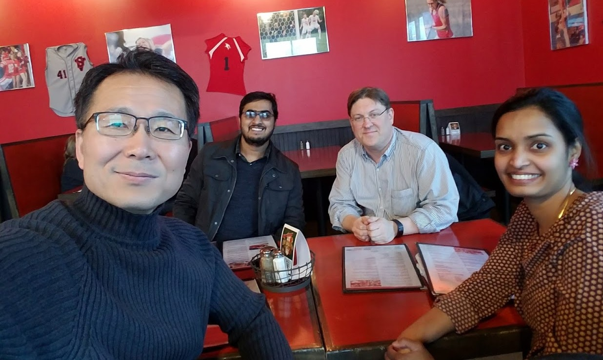
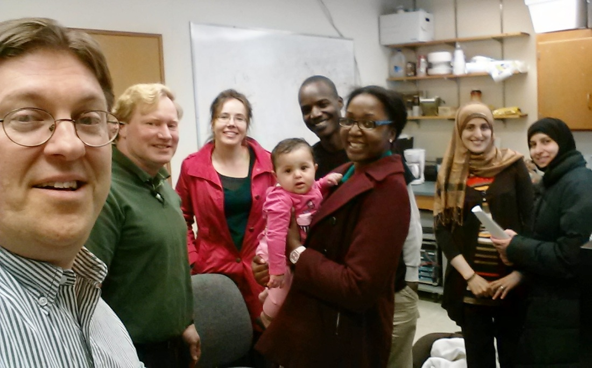
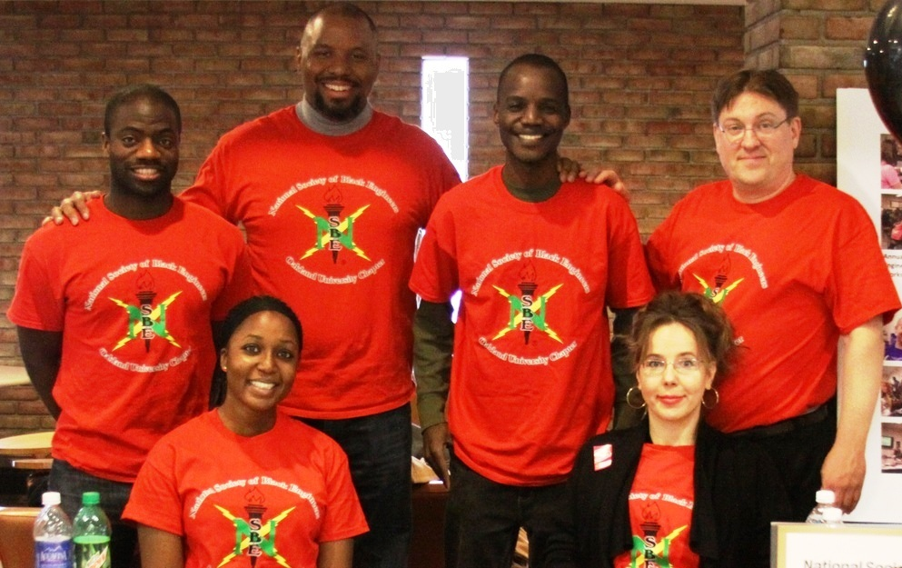
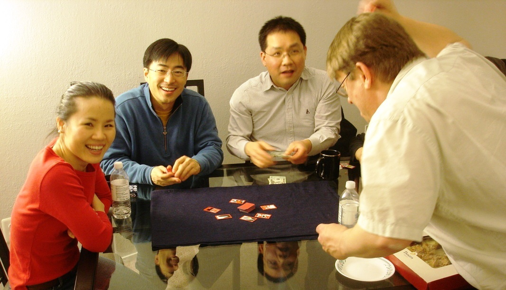

I am a certified Inclusion Advocate at Saginaw Valley State University (SVSU). Inclusion Advocates can broaden search and screening processes for new hires by encouraging alternative perspectives regarding job applicants. I have served on two faculty search committees as Inclusion Advocate.

Fig. 1. SVSU Faculty Search Committee and New Hire

Fig. 2. Grad Connection Members
I founded a diverse group of graduate student researchers. At Oakland University (OU) international and domestic students tended to socialize separately. I started Grad Connection, a graduate student group designed to foster scholarship, stewardship and fellowship. I organized events from conferences to cookouts so international and domestic students could socialize together. This resulted in additional scholarly research collaboration between international and domestic graduate students in the research lab. More importantly, it was fun.

Fig. 3. NSBE Members
I joined the campus chapter of the National Society of Black Engineers (NSBE). I was already friends with NSBE's president and several NSBE members so this was a natural fit, even though I'm not black. I participated in several outreach initiatives to encourage more diverse applications for admission.

Fig. 4. Playing Go-Stop with Friends from Church